Votre pizzeria à Cully
La Pizzain famiglia dal 1957
Les saveurs et les valeurs tout italiennes de Mario, Route de Lausanne 16, au cœur de Lavaux.
- Sur place
- À l'emporter
- À domicile
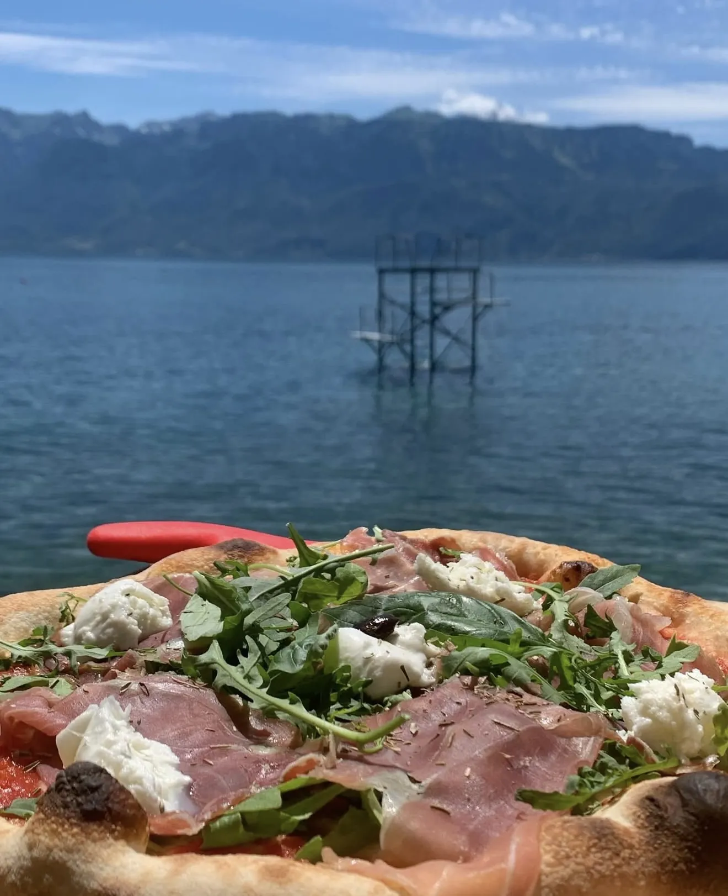
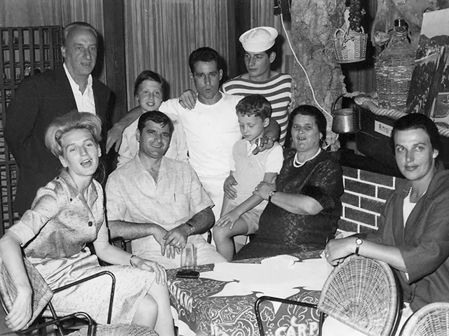
La famille, vers 1960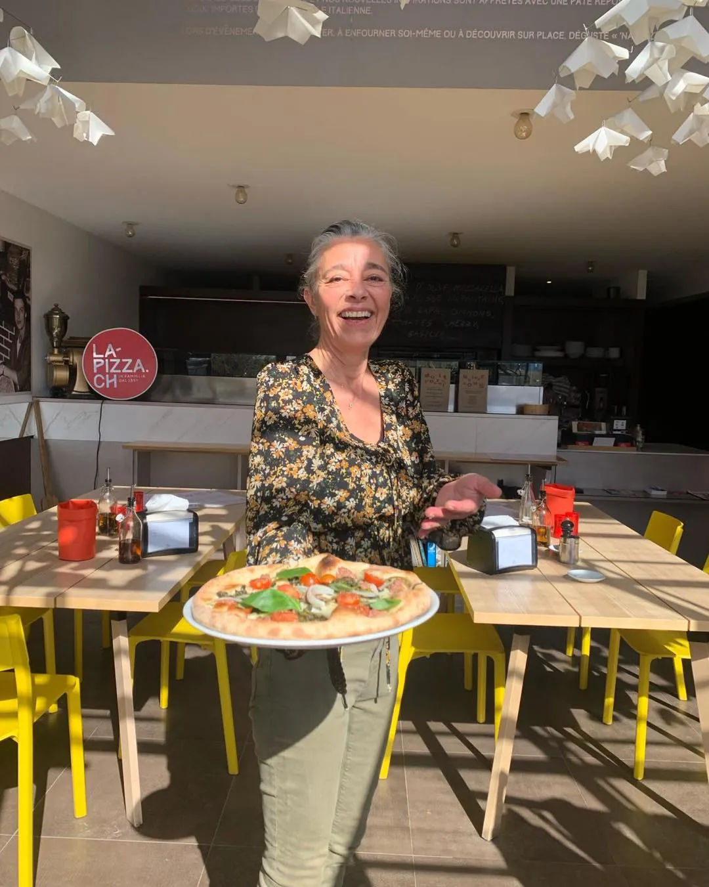
À table depuis 1957
Dal 1957
« La pizza, les Napolitains l'ont inventée, les Toscans l'ont enrichie, Sophia Loren l'a sublimée, Azzario Colombini l'a apprêtée dans la première pizzeria de Suisse, la mythique “Chez Mario” ouverte en 1957 à Lausanne. Depuis 2017, la famille Colombini affiche fièrement les saveurs et les valeurs tout italiennes de Mario. »
Mary-Luce Boand Colombini
- 01
La mitica di Mario
La Siciliana, jambon cuit, poivrons, œuf dur et olives noires : la recette de Chez Mario, toujours à la carte.
- 02
Suisse & Italie
Tomates San Marzano, mozzarella fior di latte, bufala, Grana Padano. Les produits viennent de Suisse et d'Italie.
- 03
Livrée dans Lavaux
Bourg-en-Lavaux, Lutry, Treytorrens, Rivaz, Saint-Saphorin, Puidoux-Gare et Chexbres.
Nos spécialités
La carte
Pizzas rouges, pizzas blanches sans sauce tomate et pizpaninis. Quelques-unes de la carte, qui rendent hommage au cinéma et à la chanson italienne. Faites-nous part de vos allergies.
Pizzas rouges
- Siciliana la mitica di MarioTomates San Marzano, mozzarella fior de latte, jambon cuit, poivrons, œuf dur, olives noires
- Sophia LorenTomates San Marzano, mozzarella fior de latte, salami piquant, ricotta, basilic
- Marcello MastroianniTomates San Marzano, mozzarella fior di latte, saucisse piquante nduja, basilic
- TricoloreTomates San Marzano, pesto, stracciatella di burrata, basilic
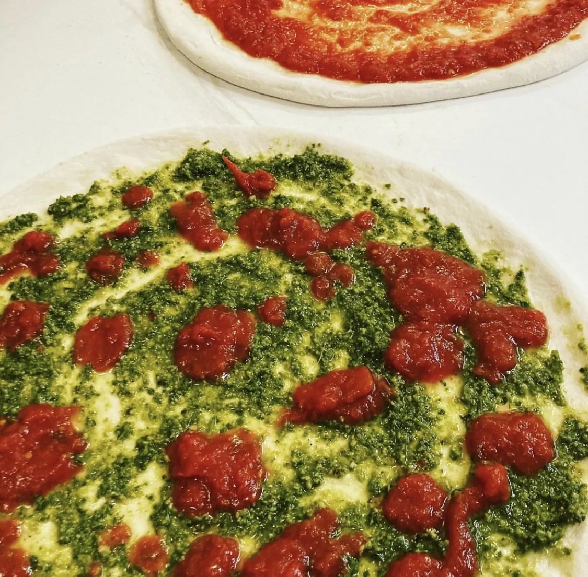
Pizzas blanches
Sans sauce tomate
- Pino DanieleMozzarella fior di latte, mozzarella de buffle, tomates cherry, copeaux de Grana Padano, roquette
- Forza AzzuriMozzarella fior di latte, mozzarella fumée, pesto Genovese, tomates cherry, basilic
- OrtolanaMozzarella de buffle, champignons, aubergines, poivrons, artichauts, courgettes
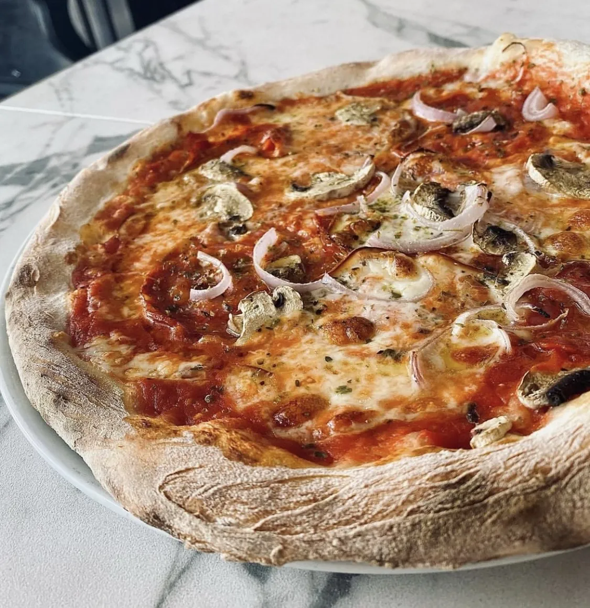
Pizpaninis
- ParmaJambon cru, mozzarella de buffle, tomates fraîches, roquette, huile d'olive
- GenovaPesto, mozzarella de buffle, tomates fraîches, huile d'olive
- Plateaux d'antipasti toscansCharcuterie, fromages, légumes marinés, olives, accompagnés de focaccia
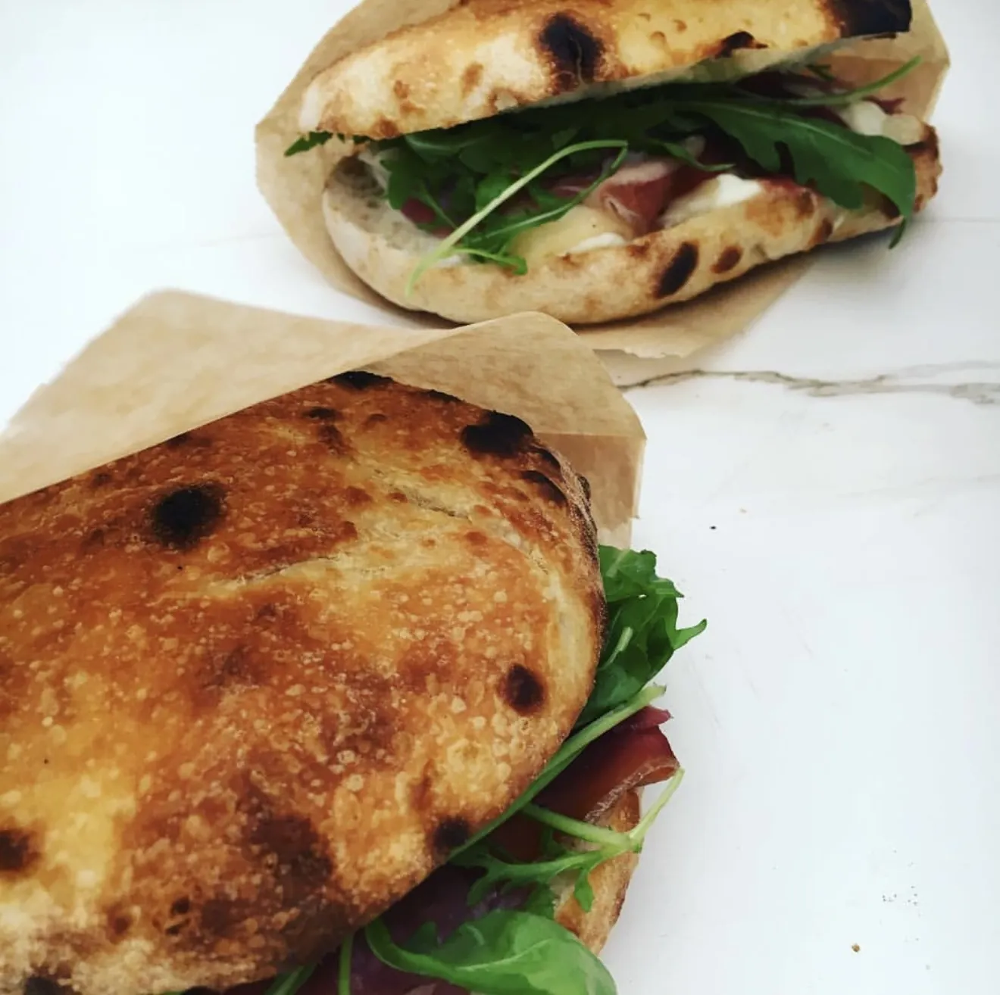
Pizzas végétariennes et piquantes signalées sur la carte · suppléments au choix
À emporter chez soi
L'épizzerie
Pour refaire l'Italie à la maison, La Pizza vend aussi ce qu'elle utilise en cuisine.
- Farine Caputo
- Pâtes Martelli
- Coulis de tomates DOP
- Pâtons à pizza frais
- Fonds de pizzas précuits
- Douceurs
La pizza artisanale précuite : dans votre four à 250°, temps de cuisson 7 à 10 minutes.
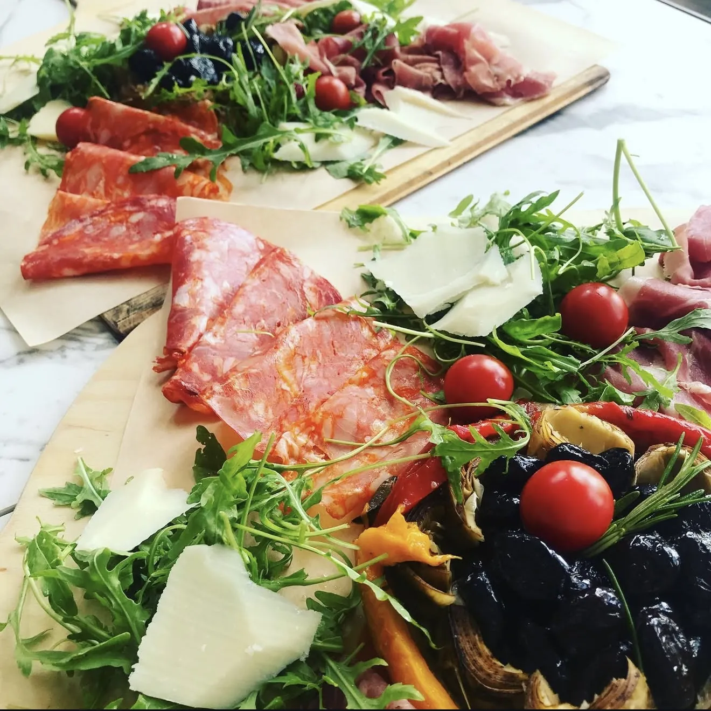
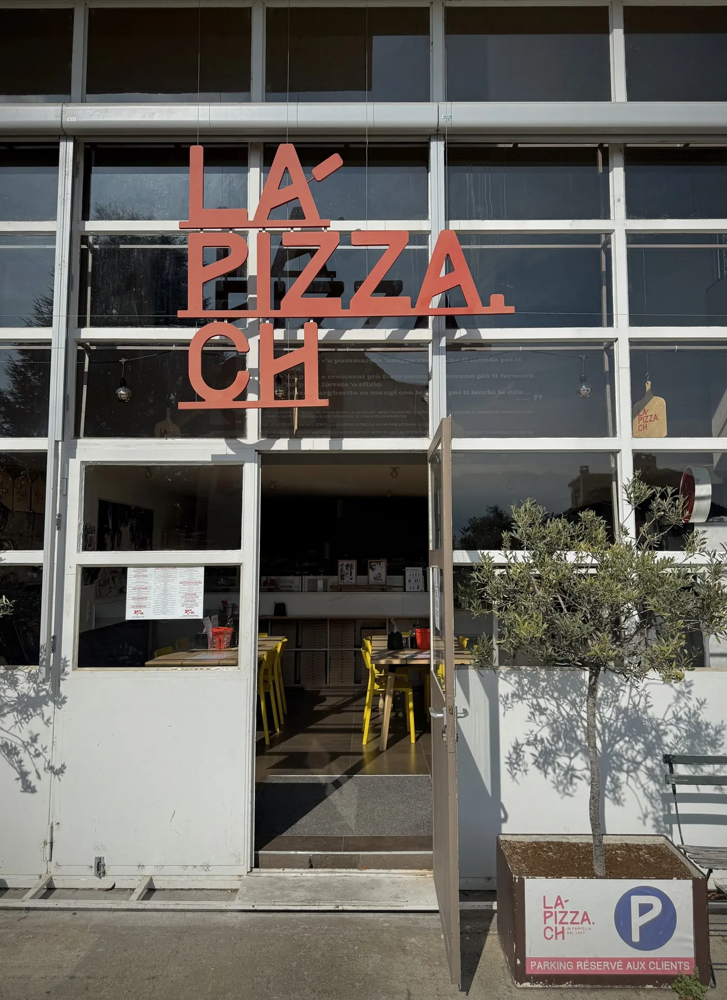
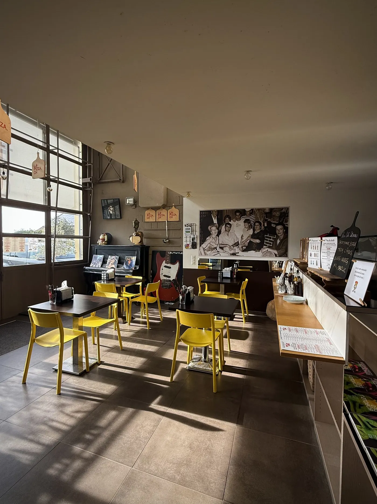
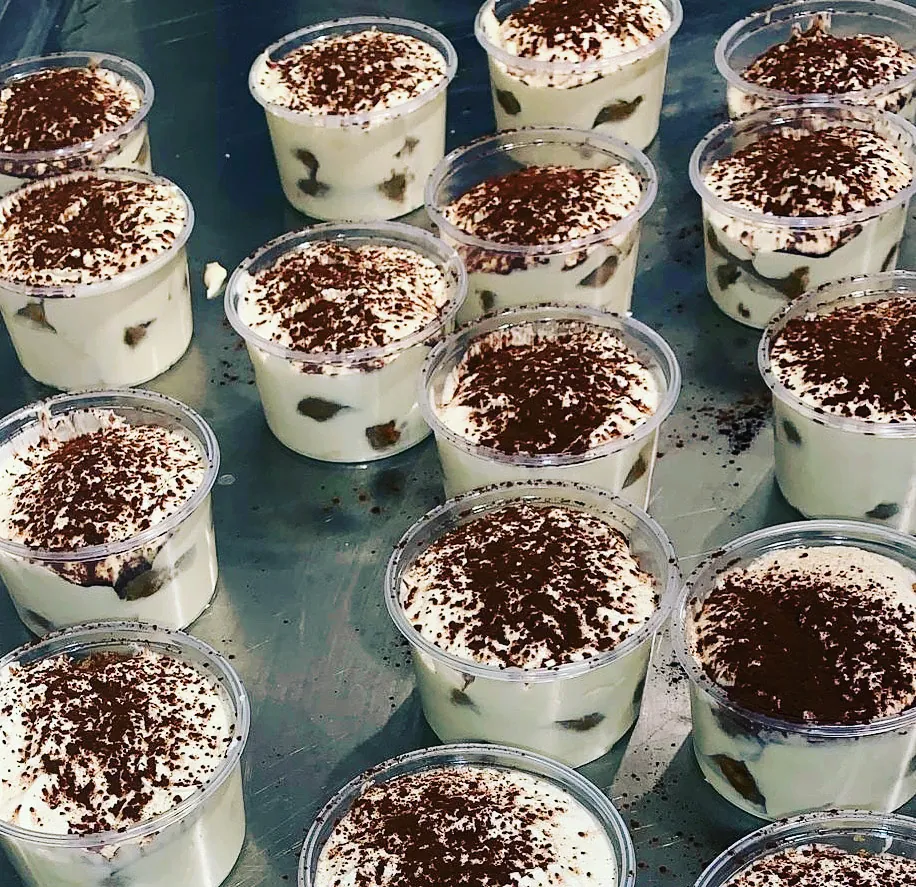
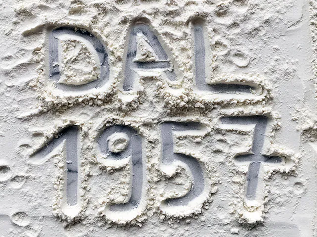
- Adresse
- Route de Lausanne 16
1096 Cully - Horaires
- Du mercredi au dimanche
11 h – 14 h · 18 h – 21 hSur place, à l'emporter, à domicile - Livraison à domicile
- Bourg-en-Lavaux, Lutry, Treytorrens, Rivaz, Saint-Saphorin, Puidoux-Gare, Chexbres
- Écrire
- colombini@la-pizza.ch